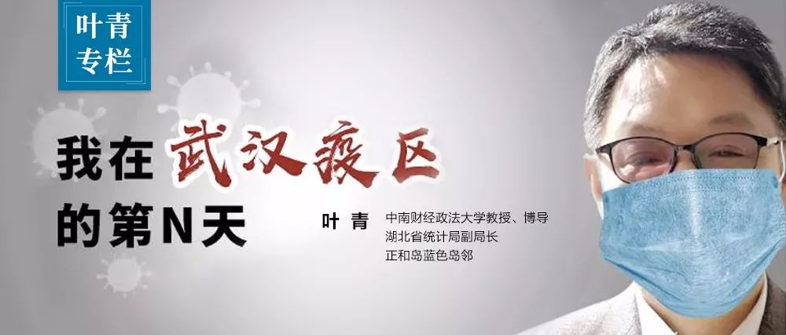

武汉的两个“纠结”
原文链接 备份链接 非常时期，武汉成了全国人民挂念、祈福的城市。封城后，武汉人民的真实生活是什么样？ 正和岛自1月26日起特别推出《叶青：我在武汉疫区的第N天》专栏。叶青是一位定居武汉40年的市民，也是一名学者和官员。接下来的一段时间，他 …
岛语

非常时期，武汉成了全国人民挂念、祈福的城市。封城后，武汉人民的真实生活是什么样？
正和岛自1月26日起特别推出《叶青：我在武汉疫区的第N天》专栏。叶青是一位定居武汉40年的市民，也是一名学者和官员。接下来的一段时间，他会用笔记录下亲身经历的、观察到的武汉，为此他还专门外出到大街上、到超市里，获得一手真实的信息。
这将是一份宝贵的史料。感谢他，我们得以更真切地感知到武汉疫情。让我们一起为武汉加油！
*作者 | 叶青 正和岛蓝色岛邻*
排版 | 张珍珍 正和岛湖北岛丁
来源 | 正和岛APP
01
改变统计口径
截至2月12日24时，据31个省（自治区、直辖市）和新疆生产建设兵团报告，现有确诊病例52526例（其中重症病例8030例），累计治愈出院病例5911例，累计死亡病例1367例，累计报告确诊病例59804例，现有疑似病例13435例。累计追踪到密切接触者471531人，尚在医学观察的密切接触者181386人。
湖北新增确诊病例14840例（武汉13436例），新增治愈出院病例802例（武汉538例），新增死亡病例242例（武汉216例），现有确诊病例43455例（武汉30043例），其中重症病例7084例（武汉5426例）。累计治愈出院病例3441例（武汉1915例），累计死亡病例1310例（武汉1036例），累计确诊病例48206例（武汉32994例）。新增疑似病例1377例（武汉620例），现有疑似病例9028例（武汉4904例）。
据湖北省卫生健康委员会通报：随着对新型冠状病毒肺炎认识的深入和诊疗经验的积累，针对湖北省疫情特点，国家卫生健康委办公厅、国家中医药管理局办公室印发的《新型冠状病毒感染的肺炎诊疗方案(试行第五版)》在湖北省的病例诊断分类中增加了“临床诊断”，以便患者能及早按照确诊病例接受规范治疗。
根据该方案，近期湖北省对既往的疑似病例开展了排查并对诊断结果进行了订正，对新就诊患者按照新的诊断分类进行诊断。为与全国其他省份对外发布的病例诊断分类一致，从12日起，湖北省将临床诊断病例数纳入确诊病例数进行公布。
中央指导组专家、北京朝阳医院副院长童朝晖在接受采访时表示，我们在看病诊断肺炎时，能够拿得到的病原学，也就百分之二三十，剩下的百分之七八十要靠临床诊断。从临床思维和临床医生的临床路径角度来说，增加临床病例的诊断，有益于临床医生对疾病多一个判断。
02
解放军又来了2600人
中共中央政治局常务委员会12日召开会议。
习近平总书记强调，当前，疫情防控工作到了最吃劲的关键阶段，要毫不放松做好疫情防控重点工作，加强疫情特别严重或风险较大的地区防控。
经中央军委主席习近平批准，军队增派2600名医护人员支援武汉抗击新冠肺炎疫情，参照武汉火神山医院运行模式，承担武汉市泰康同济医院、湖北省妇幼保健院光谷院区确诊患者医疗救治任务。
泰康同济医院计划展开床位860张，湖北省妇幼保健院光谷院区计划展开床位700张。两所医院均开设临床病区，设置感染控制、检验、特诊、放射诊断、药械、消毒供应、信息、医学工程等辅助科室。
此次抽组的医疗力量来自陆军、海军、空军、火箭军、战略支援部队、联勤保障部队、武警部队多个医疗单位。根据医院容量和建设进度，军队医护人员将分批投入支援，首批力量1400人于13日抵达武汉。
截至目前，军队共派出3批次4000余名医护人员支援武汉抗击新冠肺炎疫情。
媒体报道：13日凌晨，空军出动运-20、伊尔-76、运-9共3型11架运输机，分别从乌鲁木齐、沈阳、西宁、天津、张家口、成都、重庆等7地机场起飞，向武汉空运军队支援湖北医疗队队员和物资。
13日上午9时30分许，11架空军运输机全部抵达武汉天河机场。这是我国国产运-20大型运输机首次参加非战争军事行动，也是空军首次成体系大规模出动现役大中型运输机执行紧急大空运任务。
不仅现役军人来了，连退役军人医疗队都来了。
经国务院联防联控机制综合协调组同意，退役军人事务部决定分三批组建退役军人事务系统医疗队，共计120人。
第一批医疗队40人，由江西、山西、浙江省退役军人事务厅负责组建，成员均来自三省荣军医院的医护人员，于9日集结南昌并接受相关业务培训，11日起赴湖北省荣军医院。
“山东特色搬家式支援”成为网络热词。
11日，在山东省委副书记和副省长带队下，第九批医疗队出发驰援武汉和黄冈两市。为保障工作有序展开，此次前去黄冈的山东指挥部可谓规模空前，一共下设了医疗防治组、安保组、财务组等10个工作小组。
不仅如此，此前山东已累计向湖北捐赠蔬菜和水果超过2500吨，16地市企业还捐献了大量的食品、空调、电暖器、发热巡诊车等。
如此掏心掏肺的硬核支援获得网友盛赞，而这更获得了一个美称——“山东特色搬家式支援”。
光感谢没有用，黄冈当地企业家也拿出实际行动。
为表达黄冈人民对湖南、山东市民及全国医护人员的感谢，英山四季花海景区决定自2020年恢复营业起至2020年12月31日，针对湖南、山东市民(凭身份证)、全国所有持证医生、护士实施全年门票全免。
够大气了。
对于奉献者要给予奖励。
南京市政府发布关于为赴湖北医务人员办好十件实事的通知，其中，可以享受一次子女就学照顾。当年入学幼儿园的，结合家长意愿，优先安排在区内普惠性优质幼儿园就读；入学义务教育学校的，纳入政策照顾对象；参加中考的，参照军人子女教育优待有关规定予以加分照顾录取。
如果湖北、武汉地区的大学优先录取他们的子弟，也没有什么不可以的。
03
百万校友护汉
12日上午，中央指导组副组长、中央政法委秘书长陈一新在武汉疫情防控指挥部会议上提出：“打好武汉保卫战要发起总攻”。
陈一新出任中央指导组副组长并参与指挥武汉疫情防控已经4天。他在武汉的4天，夜以继日连续作战，边调研、边熟悉、边思考、边研究，“恶补”学习了解疫情防控情况和相关知识。
在这次会议上，陈一新从当前疫情发展趋势和阶段性特征、指挥部如何工作、现阶段抗疫的目标要求、重点任务举措等方面提出20条新判断和新要求。
陈一新提出，要“病床等人”不能“病人等床”，确保“应收尽收”、“每日清零”。想要疫情出“拐点”，先要信心出“拐点”。要提振士气、凝聚民心，实行“三量管控”：控增量、减存量、防变量，坚决打好疫情防控阻击战。都是“硬核”。
其中最新的做法是：
1.动员广大武汉校友和楚商，发动市场化、社会化力量，为打好武汉保卫战提供更多紧缺医疗物资。
2.市、区党委组织部要立即着手研究部署“火线提拔干部”工作。
3.创设指挥部嘉奖令，对每一项工作的先进及时给予嘉奖。每项重点工作嘉奖前6名、通报批评后3名。
这是典型的“一新动作”。条条硬招，个个务实。
有两大特点，一是表扬+提拔。昨天的文章中，我提及天津提拔两位，分别从副局到局级，从正处到副局。
二是武汉校友从资智回汉到救援第二故乡，全球武汉校友帮助武汉，特别是提供医护用品。
校友经济的创造力提升，从回汉、出汉（陈一新组团武汉校友到内蒙古兴安盟投资）到护汉。
建议从武汉校友扩大到全省校友，各地级市医疗资源紧张，全省140多个大学校友会行动起来。比如，宜昌需要三峡大学校友会的帮助。
2017年，在陈一新书记的指导下，自在汉高校校友总会联盟成立后，武汉市校企战略合作持续深化拓展，全国首创“双招双引”新模式，打响新时代校友经济“第一枪”；出台创新校友经济发展新模式工作方案，举办国内区域专场、海外专场、高校专场等校友资智回汉活动20余场次，引进国内外高层次人才近百人，项目签约总额突破2万亿元。
2019年，武汉继续践行“大学+”发展新理念，以共建共享共赢为目标，以强化联盟枢纽地位为着力点，深化“百万校友资智回汉工程”，不断做细做实校友回汉工作，拓展“武汉+高校+校友”同心圆，努力打造新时代武汉校友经济升级版。
校友经济，在新冠肺炎的狙击战中，已经发挥了新的作用。
12日，十堰市张湾区新冠肺炎疫情防控指挥部发布第27号通告，宣布张湾区全域从12日24：00起实施战时管制，管制措施原则上以14天为一周期，视全市及张湾区疫情防控效果予以提前解除或持续实施。
这是全国首个。主要是依据《治安管理处罚法》、《传染病防治法》和《突发公共卫生事件应急条例》等相关法律法规而采取的行动。说明张湾区的干部敢作敢为。
最重要的措施是：所有楼栋一律实施全封闭管理，所有居民非医护人员、医药物资从业人员、抗疫公务人员和水电油气、通讯网络、粮食蔬菜等基本民生保障从业人员，不得出入楼栋。
比武汉的“三天一户一人”外出更加严格。
04
要关注小孩小鸡小狗
湖北省婴童用品协会向我呼吁：
城门紧锁、封村断路、物流不达、库存见底，婴儿忍饥挨饿哇哇大哭……年轻的父母们为孩子的“口粮”，不惜冒着生命危险，各显神通，投入到孩子“口粮保卫战”中。
在新冠肺炎疫情影响下，全国告急的不仅是口罩、防护服、护目镜和消毒液等防疫物资，还有牵动亿万家庭神经的婴幼儿配方奶粉。
自2020年1月23日，武汉率先采取封城管控措施后，婴幼儿奶粉一直是宝爸宝妈最为稀缺的资源。
外地的货品进不来，他们转而向实体店抢购，却发现大多实体母婴门店已经放假。大型商场很多关闭，一些商超的母婴货架上的奶粉，也像肉类一样紧俏，早已被清扫一空。个别开门的母婴店老板，亲自上阵，清空了店内库存，但发现再要想进货，比登天还难！
湖北省婴童用品协会相关负责人介绍，上游很多乳企不是没有生产能力，而是物流停运，导致存货发不出来。加之很多返乡过年的工人因封路无法返工，乳企及配套企业不能开工，生产包装材料供不上，多重因素叠加，导致整个供应链断裂。
有些地方，甚至爆出了被困的年轻父母因孩子断粮，逼急了，不断拨打110电话，最后警察出面护送，才买到奶粉的情况……
年轻父母在家里自制尿布。
母婴行业从业者也是这次抗疫阻击战中最美的“逆行者”。灾难发生后母婴企业纷纷加入捐赠队伍，为疫情严重的区域送上各种紧缺物资；很多母婴门店坚持不打烊，让急于购买宝宝必需品的消费者能够看到门店那一束温暖的灯光；很多门店店员克服种种困难，在交通受限的情况下，蹬三轮、甚至步行送货到家，保证宝宝们的口粮；无论是品牌商、代理商、零售商，都在积极寻求各种办法，保障商品供应……
因此，协会委托我提一个建议。这是我在新冠肺炎期间的第19个建议，已经通过微信小程序《国务院客户端》、省民进、民进中央、省政协四个渠道上交：
由于有些商店的关门，不仅大人用品紧张，小人的用品也紧张。湖北母婴协会建议：
——积极反映，引起全社会重视，尽快将宝宝用品（尤其是奶粉之类的刚需产品）列入民生物资，尽快出台相关办法、保障母婴用品物流的通畅。
——对有条件营业、送货上门的母婴门店和店员提供严格防护措施。只有从业者感染风险降低，物资供应才能持续，才不会好心办坏事给社会添乱。
——重灾区消费者珍惜政府和全社会为母婴刚需产品挤出的物流资源和防疫资源，在专业人士指导下，一次性合并购买，一次性合理囤货，减少配送次数，降低从业人员的感染风险。非常时期希望消费者不要超量囤货。
——其他疫情尚不严重的地区在物流和配送还比较宽松的情况下，应引起警惕，年轻父母应提前囤货，存够口粮，彻底掐灭宝宝断粮的风险。
小鸡小鸭的粮食也有了。
截至11日，湖北省有规模猪场12133个，规模猪场存栏生猪约927万头；有规模禽场11138个，规模禽场存笼蛋鸡约14926万羽，存笼肉鸡约3668万羽。
由于新冠肺炎疫情防控形势严峻，各地实施严格交通管制，一些养殖企业的正常生产、生活相关物资运输也受到了限制。
湖北省农业部门积极加强沟通协调和统筹调度，确保饲料等急需物资调运畅通，帮助饲料企业复产复工。目前全省384家饲料企业已有70余家复工，可日供应饲料19520吨。
全省312家生猪屠宰企业、133个禽类屠宰场点，正逐步开工复产。
武汉市小动物保护协会也在“逆行”。
滞留城内无人看管的一些小动物面临断水、断粮，甚至死亡的威胁。武汉市小动物保护协会从半个多月前启动救援计划。
截至12日，该协会通过线上线下、相互帮扶等渠道，该协会已收到4200多个相关求助。68名志愿者和工作人员上门无偿服务1400多次，为小动物补充食物和水。此外，他们通过QQ群、微信群等，完成2800多户居民家中小动物的救助。被救助的近5000只动物包括猫、狗、小香猪、兔子、蛇、鸟、鱼、仓鼠、龙猫等。
11日，武汉市小动物保护协会在其微信公号公示了捐赠企业，已有7家宠物相关的企业向协会援助猫狗粮等用品。
05
小结
医护力量在增强，外来的医护人员在25000左右。
领导力量在增强，鼓励干部冲上第一线。
要发挥校友与楚商“爱武汉”的作用，兴起全球采购的新高潮。
还是陈一新副组长说得好：要发起武汉保卫战的总攻。
这样，老百姓就放心了。

关于正和岛
正和岛作为中国商界高端人脉深度社交平台，是国内专注服务于企业家群体的实名制、会员制、收费制、邀请制的O2O（Online To Offline）创新服务平台。自2012年6月开岛以来，正和岛已拥有7000余位企业家核心会员，300余名具备重要影响力的专家、学者、意见领袖，30万中小企业家及创业者APP线上注册用户，超200万深度关注中国企业发展及财经资讯的高端用户；拥有全国30个区域岛邻机构，基本覆盖中国所有省份。
正和岛致力于用信任链接全球资源与智慧，为会员提供人与人的人脉资源供需对接，认知与认知的供需对接及资源、机会和商业合作的供需对接。
登岛咨询：正和岛张珍珍
18511280817（微信同号）
点击阅读原文，了解正和岛
原文链接 备份链接 非常时期，武汉成了全国人民挂念、祈福的城市。封城后，武汉人民的真实生活是什么样？ 正和岛自1月26日起特别推出《叶青：我在武汉疫区的第N天》专栏。叶青是一位定居武汉40年的市民，也是一名学者和官员。接下来的一段时间，他 …
原文链接 备份链接 非常时期，武汉成了全国人民挂念、祈福的城市。封城后，武汉人民的真实生活是什么样？ 正和岛自1月26日起特别推出《叶青：我在武汉疫区的第N天》专栏。叶青是一位定居武汉40年的市民，也是一名学者和官员。接下来的一段时间， …
原文链接 备份链接 非常时期，武汉成了全国人民挂念、祈福的城市。封城后，武汉人民的真实生活是什么样？ 正和岛自1月26日起特别推出《叶青：我在武汉疫区的第N天》专栏。叶青是一位定居武汉40年的市民，也是一名学者和官员。接下来的一段时间，他 …
原文链接 备份链接 *************▲*************2月2日，武汉大学中南医院影像科主任徐海波教授（白衣者）和同事查看患者的CT检查影像。 （新华社/图） 全文共1150字，阅读大约需要3分钟。 武汉确诊患者单日 …
原文链接 备份链接 文 | 《财经》数据研究员 徐进 图 | 《财经》视觉中心 编辑 | 谢丽容 今日，我们来重点说说湖北的疫情数据。根据湖北卫健委的官方数据，2月12日0时-24时，湖北省新增新冠肺炎病例14840例(含临床诊断病 …